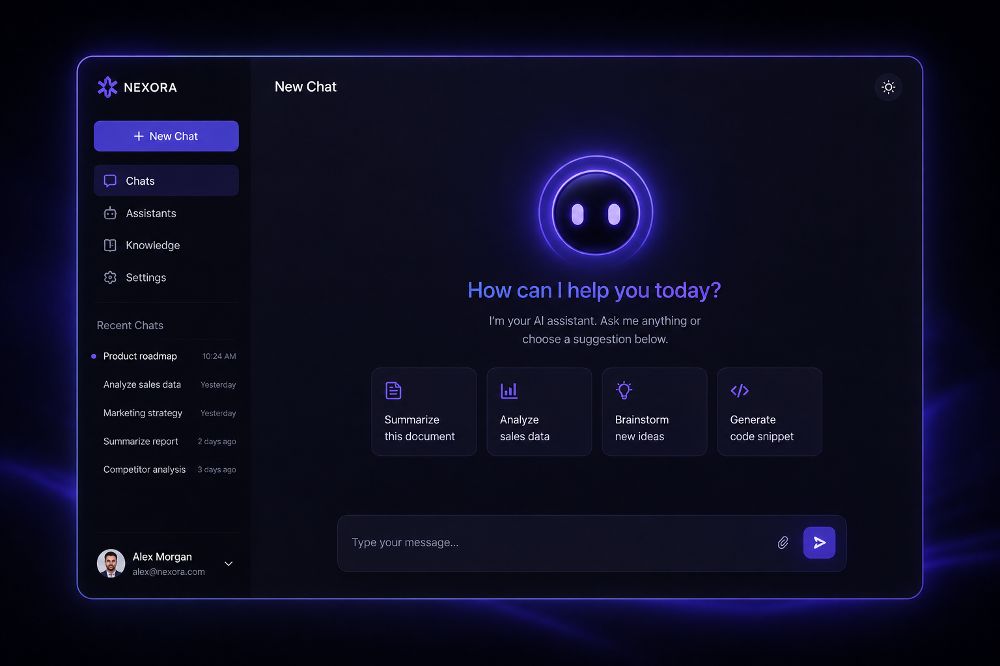
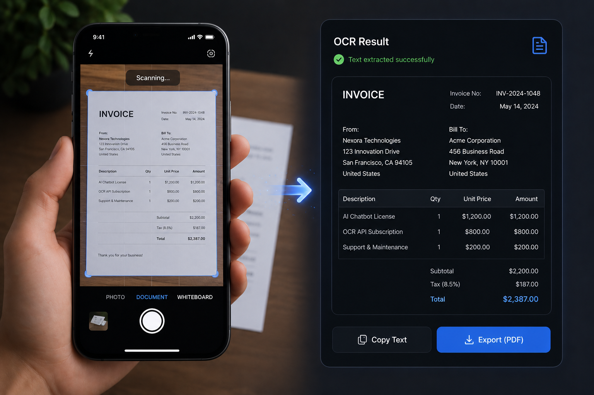
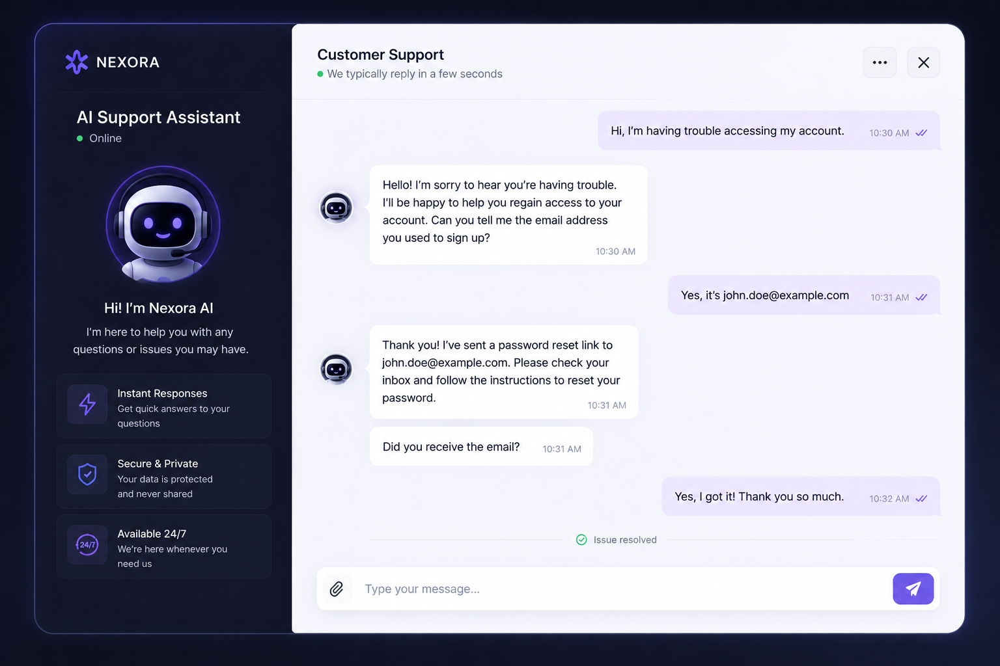

100% Private
Your data stays on your network. Always.
Run powerful AI locally with complete privacy, ownership, and control.
Your data stays on your network. Always.
Designed to run on your infrastructure.
One-time deployment. No recurring fees.
We design and deploy local AI systems tailored to your organisation's needs, ensuring your data stays where it belongs.

Deploy intelligent assistants that operate entirely within your infrastructure without relying on cloud services.

Extract, search, summarise, and analyse large volumes of documents securely using local AI models.

Build customer support and internal knowledge assistants that keep sensitive information private.
Beyond AI deployment, we provide specialised services to help individuals and organisations unlock the full potential of modern technology.
Design, deploy, and secure home, office, and enterprise networks built for performance, reliability, and growth.
Protect your digital assets through AI-powered threat detection, automated remediation, and proactive security monitoring.
Learn how to adopt and utilise AI responsibly through workshops, consulting, and hands-on educational programmes.
The engineers, designers, and strategists building secure AI solutions for organisations worldwide.
Leads company strategy and oversees the deployment of private AI systems.
Builds and optimises AI models designed for on-premise infrastructure.
Designs secure network environments for businesses and institutions.
Specialises in threat detection and automated incident response systems.
Creates intuitive user experiences that simplify complex technologies.
Have questions, want to hire or partner with us — we'd love to hear from you.